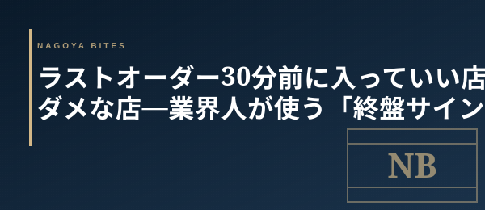

🗝 業界の裏側
ラストオーダー30分前に入っていい店・ダメな店
業界人が使う「終盤サイン」の読み方
閉店間際に「ラストオーダーまで30分ありますが…」と声をかけると、店員の表情が一瞬曇ることがある。あの瞬間に出る「歓迎しているか否か」のシグナルを、業界人は無意識に読んでいる。

「ラストオーダー30分前に入ってもいいですか？」——これは客にとって勇気のいる一言だが、飲食の現場から見ると店のコンディションを問う究極の質問でもある。入ってよい店と、入ると迷惑になる店には、入店前に確認できる明確な差がある。終盤に入店するなら、ドリンク2〜3杯で3,000〜4,000円程度に収めるのが「歓迎される客単価」の目安だ。
「歓迎している店」に出る3つのサイン
①厨房の動きが「清掃モード」に入っていない
仕込みが残っているか、コンロに何かがかかったままかを覗けるなら確認したい。厨房がすでに洗い場中心で回っている場合、料理のクオリティは期待できない。厨房が「まだ作れます」の状態かどうかが分水嶺だ。
②席が「半分以下」になっていない
残席が少ないほど「最後の1組」プレッシャーが高まる。逆に半数以上が残っている場合、あなたが「最後の迷惑客」になる確率は下がる。カウンターで先客が食事の終盤にいるなら、自分もコンパクトに飲める客であることを最初に示すと歓迎度が上がる。
③店員のあいさつが「条件反射」で出る
ドアを開けた瞬間、「いらっしゃいませ」が自然に出るかどうかだ。一瞬「えっ」という間があるなら終盤戦の余裕がない証拠。条件反射で笑顔が出る店は、まだオペが回っている。
「入ると迷惑な店」の見分け方
閉店30分前を過ぎて入店する場合、以下のいずれかに該当したら再考したい。テーブルに「清掃済み」のサインが複数ある（椅子が上がっている、調味料が引き上げられている）、BGMが変わった（閉店前に意図的にテンポを落とす店がある）、レジ周りで精算処理が始まっている——これらは「もう店じまい気分」のサインだ。
「入っていい客」として振る舞う3原則
実は問題は「入るかどうか」より「どう入るか」にある。業界人が使う終盤入店のマナーは3つ。①最初に「軽く飲むだけです」と宣言する（キッチンへの安心を与える）。②〆料理を最初に注文しない（炭水化物はオペコストが高いため最後に）。③ドリンクは先払いを申し出る（会計の滞留を減らす）。これだけで、終盤の入店でも歓迎される客になれる。
名古屋の夜の名店が21時や22時に「終了」する理由は、仕込みの逆算と職人の体力の両方にある。深夜まで開ける店が「格が落ちる」のではなく、閉めるタイミングを決める論理が違うだけだ。ラストオーダー前に入るなら、その店の「終わり方の哲学」を尊重する客として振る舞おう。
Inside Perspective — 業界人の目利き
- 仕込み量と席数で決まる「受け入れ可能枠」——14時から仕込む店ほど終盤の対応余力は少ない
- 厨房の清掃フェーズは18時台ピーク終了後30分で始まる店もある。21時閉店の店に20時45分入店は要注意
- 「軽く飲むだけ」宣言と先払い申し出で歓迎度が3段階上がる——これが業界人の終盤入店マナー